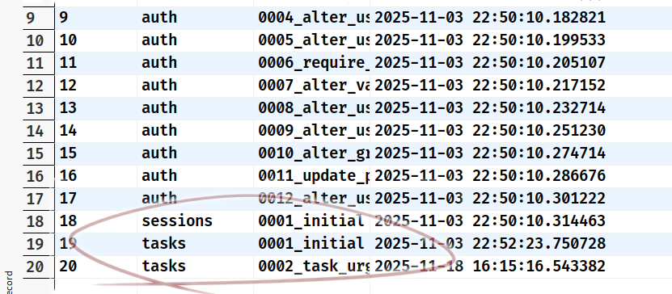

OTROS TIPOS DE MIGRACIONES
Que no veremos aquí
- De PHP a Python
- De API v2 a API v3
- De Django 4 a Django 5
- De Django a FastAPI
- De PostgresSQL 16 a PostgreSQL 17
- La migración del salmón Rojo, de homo habilis a homo erectus, etc.
Quién soy yo
Juan Ignacio Rodríguez de León
euribates@gmail.com
Trabajo para la Dirección General de Transformación Digital de las administraciones públicas del Gobierno de Canarias
Pero basta de hablar de mi
Qué veremos
- Qué son las migraciones
- Instalación del proyecto
- Migraciones automáticas
- Migraciones manuales usando SQL
- Migraciones manuales Usando Python
- Recomendaciones y consejos
Migración
Operación que consiste en aplicar cambios en el esquema de la base de datos, llevando un registro de las operaciones realizadas, con el objetivo de que los modelos de Django permanezcan sincronizados con la base de datos.
initial
```shell
git switch initial
```
tasks.models::Task
class Task(models.Model):
name = models.CharField(max_length=200)
description = models.TextField(blank=True)
slug = models.SlugField(unique=True)
completed = models.BooleanField(default=False)
created_at = models.DateTimeField(auto_now_add=True)
updated_at = models.DateTimeField(auto_now=True)
def __str__(self):
return self.name
migrate
En los pasos anteriores, ejecutamos el comando
migrate
¿Qué hace esta orden?
Ejecuta todas las migraciones que hubiera pendientes de aplicar. Si no hay ninguna, no hace nada.
Atención, pregunta
¿Como es que tenemos migraciones, si todavía no hemos hecho nada?
Una migración es un cambio en la base de datos, es decir, que refleja las diferencias entre lo que tenemos en nuestros modelos y la realidad de la base de datos.
Cuando realizamos el comando migrate en los
pasos anteriores, hay una diferencia entre los modelos
y la base de datos.
Hay modelos definidos, pero en la base de datos no hay nada
¿Qué hace makemigrations?
Refleja los cambios entre nuestros modelos y la base de datos
¿Cómo lo hace?
Generando ficheros de migraciones, que son ficheros en Python
¿Cómo se pasa del fichero de migración
a cambiar el esquema de la base de datos?

Anatomía de una migración
Ejercicio: Ver el contenido del fichero:
tasks/migrations/0001_initial.py
from django.db import migrations, models
class Migration(migrations.Migration):
initial = True
dependencies = []
operations = [
migrations.CreateModel(
name="Task",
fields=[
(
"id",
models.BigAutoField(
auto_created=True,
primary_key=True,
serialize=False,
verbose_name="ID",
),
),
("name", models.CharField(max_length=200)),
("description", models.TextField(blank=True)),
("slug", models.SlugField(unique=True)),
("completed", models.BooleanField(default=False)),
("created_at", models.DateTimeField(auto_now_add=True)),
("updated_at", models.DateTimeField(auto_now=True)),
],
),
]
sqlmigrate
Ejercicio: Ejecutar el siguiente comando:
./manage.py sqlmigrate tasks 0001
SQL
BEGIN;
--
-- Create model Task
--
CREATE TABLE "tasks_task" ("id" integer NOT NULL PRIMARY KEY AUTOINCREMENT,
"name" varchar(200) NOT NULL, "description" text NOT NULL, "slug" varchar(50)
NOT NULL UNIQUE, "completed" bool NOT NULL, "created_at" datetime NOT NULL,
"updated_at" datetime NOT NULL);
COMMIT;
Más Cosas interesantes que podemos ver
en el código de la migración
- La migración tiene un campo booleano,
initial, que indica que es la primera migración creada. Marca el inicio de registro de cambios. Veremos que el resto de las migraciones no tienen este valor. - Hay un campo de dependencias,
dependencies. Como es la primera, es una lista vacía, pero veremos que es la lista de dependencias que tienen que haber sido aplicadas antes de poder aplicar esta.
Ejercicio: Añadir un campo
Añadir al modelo Task un nuevo campo
de que nos sirva para saber que tareas
son urgentes. Vamos a llamar a ese campo urgent
y lo haremos de tipo booleano.
class Task(models.Model):
name = models.CharField(max_length=200)
description = models.TextField(blank=True)
slug = models.SlugField(unique=True)
completed = models.BooleanField(default=False)
created_at = models.DateTimeField(auto_now_add=True)
updated_at = models.DateTimeField(auto_now=True)
class Task(models.Model):
name = models.CharField(max_length=200)
description = models.TextField(blank=True)
slug = models.SlugField(unique=True)
urgent = models.BooleanField(default=False)
completed = models.BooleanField(default=False)
created_at = models.DateTimeField(auto_now_add=True)
updated_at = models.DateTimeField(auto_now=True)
Paso a paso
- Hacemos el cambio en el fichero
models.py - Hagamos un
./manage.py check, para prevenir errores - Verificar la diferencia entre nuestro modelo y la tabla de la base de datos
- ejecutamos
./manage.py makemigrations tasks - ejecutamos
./manage.py showmigrations tasks - ejecutamos
./manage.py migrate tasks - ejecutamos
./manage.py showmigrations tasks

¿Cómo sabe Django
qué migraciones ha aplicado?
- Almacena la información en la BD, en la tabla
django_migrations - Esta tabla tiene cuatro campos:
id: clave primariaapp: Identificador de la appname: Nombre o descripción de la migraciónapplied: Si ha sido aplicada (en esta base de datos)
La tabla django_migrations

class Migration(migrations.Migration):
dependencies = [
("tasks", "0001_initial"),
]
operations = [
migrations.AddField(
model_name="task",
name="urgent",
field=models.BooleanField(default=False),
),
]
Cosas que hemos aprendido hasta ahora
- Podemos hacer migraciones de forma automática
- No hay (mucha) magia, solo son ficheros creados automáticamente
- Las migraciones forman una una lista encadenada, que definen dependencias.
- El estado de aplicación de las migraciones se almacena en la propia base de datos.
Antes de saltar sobre el teclado
Vamos a pensar cómo lo hacemos
¿Ideas?
Baby Steps
- Lo mejor es que las migraciones sean lo más sencillas posibles.
- Cada migración debe ser responsable de hacer una única cosa
- Es mejor tener 10 migraciones sencillas que una compleja que realice 10 cambios
- Esta es la idea más importante de esta charla
Brainstorm
- No queremos perder la información que ya está
en el campo
urgent - No podemos crear otros tres campos booleanos,
low_priotity,normalycritic, esto nos permite tener estados imposibles. - Necesitamos un nuevo campo de priridad, y hay que librarse del
antiguo campo
urgent
Tareas
- Crear un nuevo modelo
Priority, con las categorías definidas antes - Crear una
ForeignKeydesdeTaskaPriority - Actualizar la prioridad teniendo en cuenta el antiguo
campo
urgent - Eliminar el campo
urgent
Ejercicio: Crear el modelo Priority
Esto nos lleva una migración
- Modificamos el fichero
models.py - Esto crea que la base de datos no está soncronizada con los models
- Lo arreglamos con
makemigrations tasksymigrate tasks
models.Priority
class Priority(models.Model):
id = models.CharField(max_length=3, primary_key=True)
representation = models.CharField(max_length=18)
level = models.IntegerField()
def __str__(self):
return self.representation
¿Por qué se define el campo id?
Se crea el id manualmente porque no
queremos un entero. Preferimos claves
alfabéticas fáciles de interpretar en la base
de datos.
- Recomendación totalmente subjetiva
- Aspectos positivos: Hay que pensar antes de añadir un nuevo nivel de prioridad
- Aspectos negativos: Hay que pensar antes de añadir un nuevo nivel de prioridad
Pero la tabla está vacía
- La migración ha creado la tabla, pero no contiene datos, obviamente
- Podríamos ir ahora al admin y crearlos a mano, pero hay una opción mejor ...
- ... Hacer una migración manual
Migraciones manuales
- Hasta el momento, solo hemos usado migraciones automáticas, creadas por el propio sistema de migraciones de Django
- Pero podemos crear nuestras propias migraciones
Tipos de migraciones manuales
Hay dos tipos
- Migraciones basadas en SQL
- Pueden hacer cualquier cosa que se pueda hacer con SQL
- Migraciones basadas en Python
- Pueden hacer cualquier cosa que se pueda hacer con Python
Migraciones propias basadas en SQL
Estas son las más sencillas, así que las veremos primero
- El primer paso es crear una nueva migración, pero manual
- La documentación las denomina migraciones vacías (empty)
- Se usa el comando
makemigrationspero con el flag --empty - Hay que asignarla a una app
- Hay que darle un nombre (apto como nombre de fichero)
Crear una migración vacia
./manage.py makemigrations --empty --name priority_fill_in tasks
Migrations for 'tasks':
tasks/migrations/0004_priority_fill_in.py
La migración vacía está, ejem, vacía
class Migration(migrations.Migration):
dependencies = [
("tasks", "0003_priority_alter_task_options"),
]
operations = []
RunSQL
class RunSQL(sql, reverse_sql=None,
state_operations=None,
hints=None,
elidable=False)
Allows running of arbitrary SQL on the database [...]
sql, and reverse_sql if provided, should be strings of SQL
to run on the database [...]
class Migration(migrations.Migration):
dependencies = [ ("tasks", "0003_priority_alter_task_options") ]
operations = [ ]
SQL_INSERT_PRIORITIES = (
"INSERT INTO tasks_priority (id, representation, level) VALUES "
" ('LOW','Baja',-1), ('NOR','Normal',0), ('URG','Urgente',1), ('CRI','Crítica',9);"
)
class Migration(migrations.Migration):
dependencies = [ ("tasks", "0003_priority_alter_task_options") ]
operations = [ ]
SQL_INSERT_PRIORITIES = (
"INSERT INTO tasks_priority (id, representation, level) VALUES "
" ('LOW','Baja',-1), ('NOR','Normal',0), ('URG','Urgente',1), ('CRI','Crítica',9);"
)
SQL_DELETE_PRIORITIES = "DELETE FROM tasks_priority;"
class Migration(migrations.Migration):
dependencies = [ ("tasks", "0003_priority_alter_task_options") ]
operations = [ ]
SQL_INSERT_PRIORITIES = (
"INSERT INTO tasks_priority (id, representation, level) VALUES "
" ('LOW','Baja',-1), ('NOR','Normal',0), ('URG','Urgente',1), ('CRI','Crítica',9);"
)
SQL_DELETE_PRIORITIES = "DELETE FROM tasks_priority;"
class Migration(migrations.Migration):
dependencies = [ ("tasks", "0003_priority_alter_task_options") ]
operations = [
migrations.RunSQL(SQL_INSERT_PRIORITIES, SQL_DELETE_PRIORITIES),
]
Al turrón
Apliquemos la migración
./manage.py check./manage.py show_migrations tasks./manage.py migrate tasks./manage.py show_migrations tasks
Ejercicio: Viajar en el tiempo 1/2
- Comprobar que los datos de prioridad están en la base de datos.
- Viajar en el tiempo hasta antes de aplicar la migración de carga
-
./manage.py migrate tasks 0003 - Comprobar que los datos de NO prioridad están en la base de datos.
❯ ./manage.py migrate tasks 0003
Operations to perform:
Target specific migration: 0003_priority_alter_task_options, from tasks
Running migrations:
Rendering model states... DONE
Unapplying tasks.0004_priority_fill_in... OK
❯ ./manage.py migrate tasks 0003
Operations to perform:
Target specific migration: 0003_priority_alter_task_options, from tasks
Running migrations:
Rendering model states... DONE
Unapplying tasks.0004_priority_fill_in... OK
Volvamos al presente
./manage.py show_migrations tasks./manage.py migrate tasks./manage.py show_migrations tasks- Comprobar que los datos de prioridad vuelven a estar en la base de datos.
Añadir la clave foránea
class Task(models.Model):
name = models.CharField(max_length=200)
description = models.TextField(blank=True)
slug = models.SlugField(unique=True)
urgent = models.BooleanField(default=False)
completed = models.BooleanField(default=False)
created_at = models.DateTimeField(auto_now_add=True)
updated_at = models.DateTimeField(auto_now=True)
class Task(models.Model):
name = models.CharField(max_length=200)
description = models.TextField(blank=True)
slug = models.SlugField(unique=True)
priority = models.ForeignKey(Priority,
default='NOR',
related_name='tasks',
on_delete=models.PROTECT,
)
urgent = models.BooleanField(default=False)
completed = models.BooleanField(default=False)
created_at = models.DateTimeField(auto_now_add=True)
updated_at = models.DateTimeField(auto_now=True)
Hemos hecho un cambio en models.py
Crear la migración / aplicar la migración
./manage.py check./manage.py makemigrations tasks./manage.py showmigrations tasks./manage.py migrate tasks./manage.py showmigrations tasks
Vuelve a haber sincronía entre base de datos y modelos
Quedan dos cosas pendientes ...
- Todas las tareas están marcadas con prioridad normal, incluso las que habíamos marcado como urgentes
- Seguimos teniendo el campo
urgent, que es redundante conpriority
Migraciones de datos con Python
- Si las migraciones usando solo SQL se quedan cortas, podemos hacer migraciones que usen código Python.
- En vez de usar la clase
RunSQLusaremos la claseRunPython
La clase RunPython
- Igual que
RunSQLacepta dos parámetros, siendo el segundo opcional - A diferencia de
RunSQL, estos parámetros deben ser callables; normalmente funciones - La primera función es el código que aplica el cambio. El segundo, si se indica, el que deshace el cambio.
Uso de los modelos en la migración
- NO podemos usar los modelos libremente
- Esto es así porque la migración, si accede al modelo, debe usar la versión del modelo vigente en esa momento.
- Para tratar con eso, las funciones de migración deben aceptar dos parámetros
Las funciones de migración
- El primer parámetro es un registro que mantiene los versiones a lo largo de la historia de todos los modelos
- Nos permite acceder al modelo tal y como era en la evolución del proyecto
-
El segundo parámetro es una instancia de la clase
SchemaEditor, que se puede usar para realizar cambios manuales en el esquema de la base de datos. No es recomendable usarlo.
Migración de datos para usar
la información de urgent
Creemos otra migración vacia
./manage.py makemigrations --empty --name set_priority_from_urgent tasks
Migrations for 'tasks':
tasks/migrations/0006_set_priority_from_urgent.py
La clase esta vacía, claro
class Migration(migrations.Migration):
dependencies = [
("tasks", "0005_task_priority"),
]
operations = []
La función de ida
- Vamos a crear la función que aplica los cambios
- Seleccionamos todas las tareas urgentes, y les cambiamos la prioridad
- Esto se podría haber hecho también con una migracion con SQL puro, si
set_priority
def set_priority(apps, schema_editor):
# No podemos usar Task directamente, porque puede
# que a estas alturas exista una versión posterior a la
# que espera la migración. Por eso tenemos que viajar en el tiempo
# y cargar el modelo que se corresponda con el momento histórico
Task = apps.get_model("tasks", "Task")
for task in Task.objects.filter(urgent=True):
task.priority_id = 'URG'
task.save()
undo_set_priority
def undo_set_priority(apps, schema_editor):
Task = apps.get_model("tasks", "Task") # Lo mismo
for task in Task.objects.exclude(priority='NOR'):
task.priority_id = 'NOR'
task.save()
La migración queda así:
class Migration(migrations.Migration):
dependencies = [
("tasks", "0005_task_priority"),
]
operations = [
migrations.RunPython(set_priority, undo_set_priority),
]
El código completo
from django.db import migrations
def set_priority(apps, schema_editor):
# No podemos usar Task directamente, porque puede
# que a estas alturas exista una versión posterior a la
# que espera la migración. Por eso tenemos que viajar en el tiempo
# y cargar el modelo que se corresponda con el momento histórico
Task = apps.get_model("tasks", "Task")
for task in Task.objects.filter(urgent=True):
task.priority_id = 'URG'
task.save()
def undo_set_priority(apps, schema_editor):
Task = apps.get_model("tasks", "Task") # Lo mismo
for task in Task.objects.exclude(priority='NOR'):
task.priority_id = 'NOR'
task.save()
class Migration(migrations.Migration):
dependencies = [
("tasks", "0005_task_priority"),
]
operations = [
migrations.RunPython(set_priority, undo_set_priority),
]
Queda solo el último paso
- Eliminar el campo
urgent - Solo hay que borrar el campo del modelo
- Esto provoca una discrepancia modelos/base de datos
- aplicamos
makemigrations - aplicamos
migrate - Todo ok
La migración final
class Migration(migrations.Migration):
dependencies = [
("tasks", "0006_set_priority_from_urgent"),
]
operations = [
migrations.AlterModelOptions(
name="task",
options={"ordering": ["-priority__level"]},
),
migrations.RemoveField(
model_name="task",
name="urgent",
),
]
Recomendación importante
Para las migraciones con Python
- Mejor no usar ninguno de los métodos definidos por nosotros
- No hay garantía de que esos métodos estén definidos en el momento de la migración
- O, si están definidos, que funcionen de la forma esperada
Cosas que hemos aprendido hasta ahora
- Las migraciones deben realizarse con pasos cortos (baby steps)
- Podemos hacer migraciones manuales, usando SQL o Python
- Podemos viajar en el tiempo con las migraciones
- Las migraciones manuales pueden (¿deben?) definir como hacer el cambio y como deshacerlo
- Para las migraciones automáticas, no hay que hacer nada.
- SQL es muy potente, pero si se quedan corto, ... con Python se puede hacer casi todo.
Ejercicio (Si hay tiempo)
Añadir un campo due_date
Con la fecha en la que debería estar
terminada la tarea
Condiciones:
- El campo no puede ser nulo
- Existe un librería de I.A. que nos permite estimar la fecha de terminación a partir de la descripción de la tarea.
- (Simularemos este sistema con un valor al azar entre 1 y 21 días en el futuro)
Problema
Si definimos el campo como no nulo,
la migración fallará,
porque tenemos en la base de datos
registros que tendrán ese campo a nulo.
Una posible solución
- Definir el campo
due_date, de tipo fecha, pero con la posibilidad de ser nulo. - Crear la migación y aplicarla, no debería dar problema.
- Crear una migración manual, con Python, que use la librería anterior para estimar y asignar una fecha de entrega. Aplicarla.
- Ahora todos los registros tienen una fecha de entrega. Redefinir el campo para que no acepte nulos. Crear la migración y aplicar.
Aun más complicado
- Hay que asegurarse de que las dos aplicaciones, la manual, que asigna las fechas y la siguiente, que redefine el campo para que no pueda ser manual, se aplique una inmediatamente después de la otra.
- La operación de la I.A. puede ser muy costosa computacionalmente. Supón que toma 15 minutos de media evaluar cada tarea.
- Hay un momento critico entra
- ¿Como podriamos solucionar estos problemas?
Gracias por su atención
Juan Ignacio Rodríguez de León
euribates@gmail.com
Preguntas, críticas, sugerencias, ideas, etc.
son todas bienvenidas